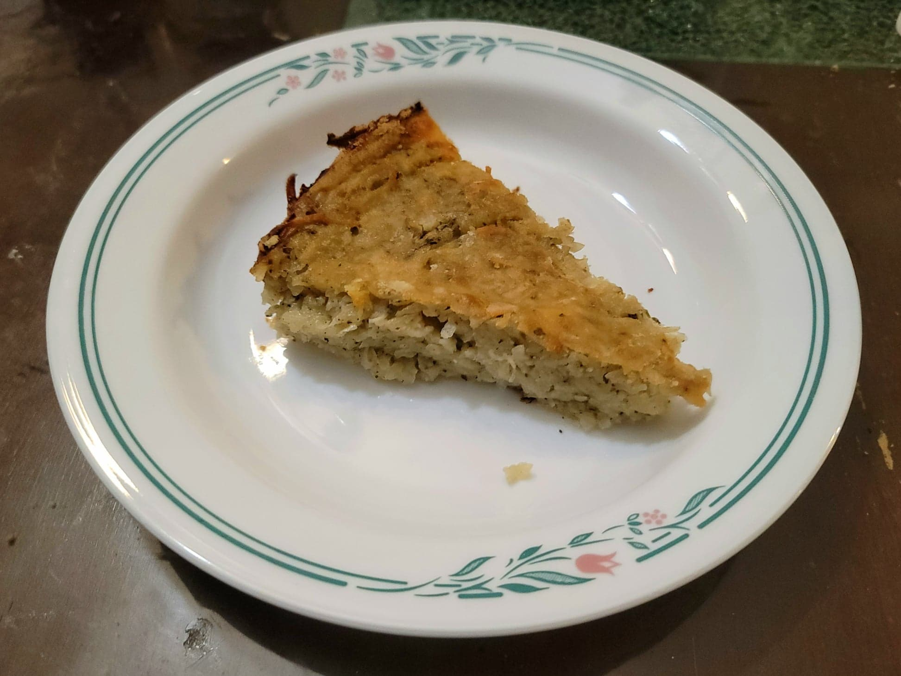

Patatnik

Ingredients:
- 4 tbsp Butter, divided, 2 tbsp diced
- 4 tbsp Flour, divided
- 3 lb Potatoes, peeled and grated
- 2 medium Onions, grated
- 4 Eggs
- Optional: 130 g Feta, crumbled
- 2 tsp Dried mint
- 1 tsp Salt
- 1 tsp Coarse black pepper
Instructions:
- Preheat an oven to 450 degrees Fahrenheit.
- Take 2 tbsp butter and melt it in a 12 inch cast iron skillet. Remove from heat. Tilt the skillet to have the butter coat all surfaces evenly. Then take 2 tbsp flour and dust the skillet to evenly coat all the sides.
- Place the potatoes into a towel lined bowl and squeeze out most of the liquid, about 1/2 - 2/3 cup liquid. Then transfer to a mixing bowl with the onions, eggs, feta, mint, salt, and pepper. Mix thoroughly to combine.
- Transfer the mixture to the cast iron skillet. Spread evenly. Then top as evenly as possible with the diced butter. Top again with a dusting of the rest of the flour.
- Place into the oven and bake for about 45 minutes, or until golden.
- Remove from the oven and let rest for at least 5 minutes. Serve hot.